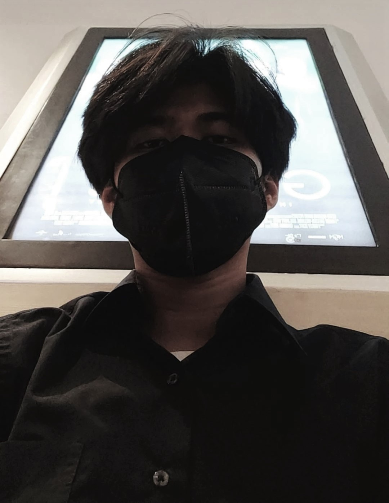

Hi Welcome to my hut
Perkenalkan nama saya Septian Putra Arji Wibawa, lulusan dari SMKN 5 Kota Bekasi, dengan jurusan Rekayasa Perangkat Lunak. memiliki pengalaman kerja sebagai helper selama 1 tahun, dan seorang mahasiswa pada Universitas Terbuka. Pada saat ini saya menjadi salah satu talent di bootcamp DUMBWAYS.ID dengan kelas fullstack Developer
Download CV

 |
 |
 |
 |

Septian Putra Arji Wibawa
Talent at Dumbways